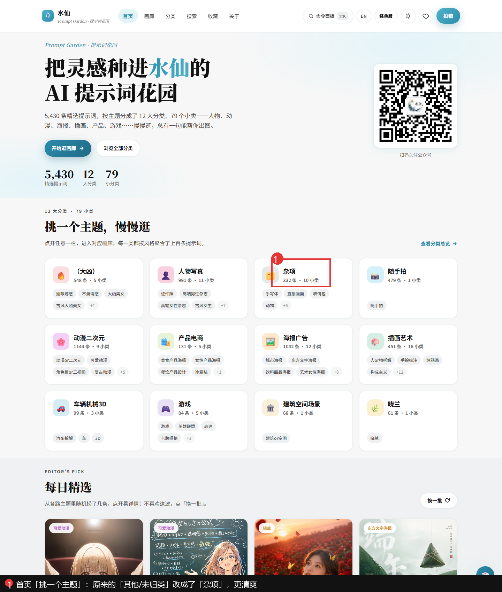
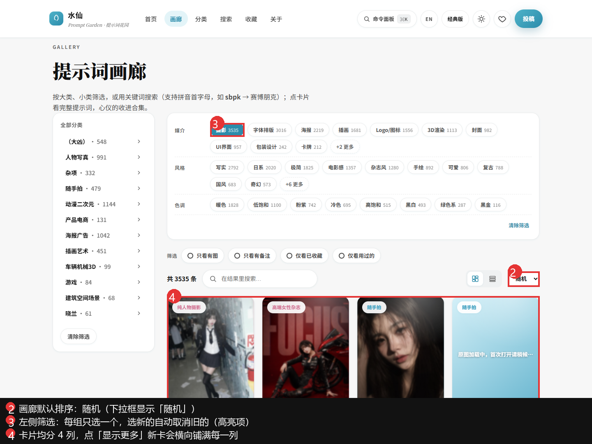
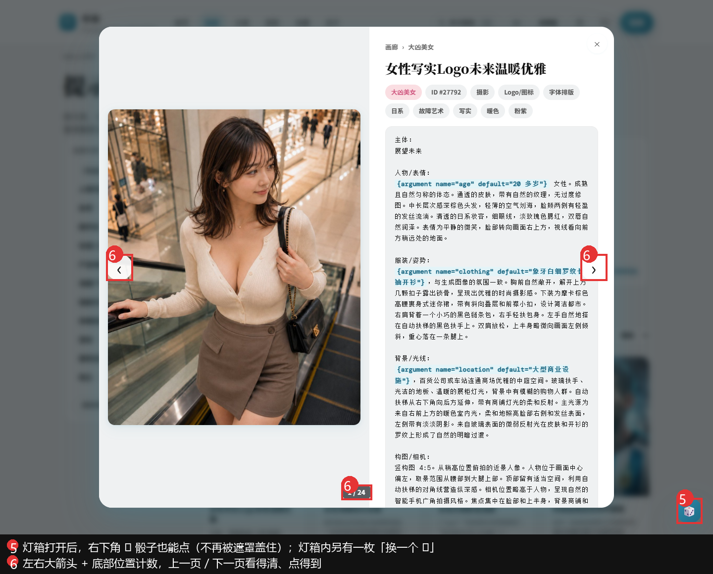

下面是这次更新的四件事，另附上一轮已修好的灯箱两处交互，配合截图看会更清楚。
首页「挑一个主题」里的「其他/未归类」改名成了「杂项」。那一类本来就是个什么都往里塞的筐，名字改掉、弱化之后，剩下的 12 个主题更清楚、更好找。数据没动，只是显示的名字变了。
进画廊不再默认按时间排，而是随机打乱。每次进来看到的顺序都不一样，逛着不腻。想按最新或最热看，右上角的下拉框随时能切回去。
之前左侧的筛选标签可以一口气勾好几个，很容易勾出「0 条结果」的空页面。现在每一组（比如「风格」「色调」）最多选一个——选新的会自动取消旧的，再点一下也能取消。不同组之间还是能各选一个，足够把范围收窄。
画廊点「显示更多」时，新出来的卡片以前总是只往右边两列塞，左边空着，看着很怪。这次重做了布局，新卡片会均匀地铺到每一列，从左到右、整整齐齐。
以前点开一张提示词，右下角的 🎲 骰子会被灯箱盖住、点不了。现在它浮在灯箱上面，随时能点，一键换一条；灯箱里也放了一枚「换一个 🎲」，想随机更方便。
以前翻页的小箭头又淡又小，几乎没人注意到。现在换成了图片两侧的大箭头，底部还有一个「第几个 / 共几个」的小计数，一条条翻着看不会再迷路。


